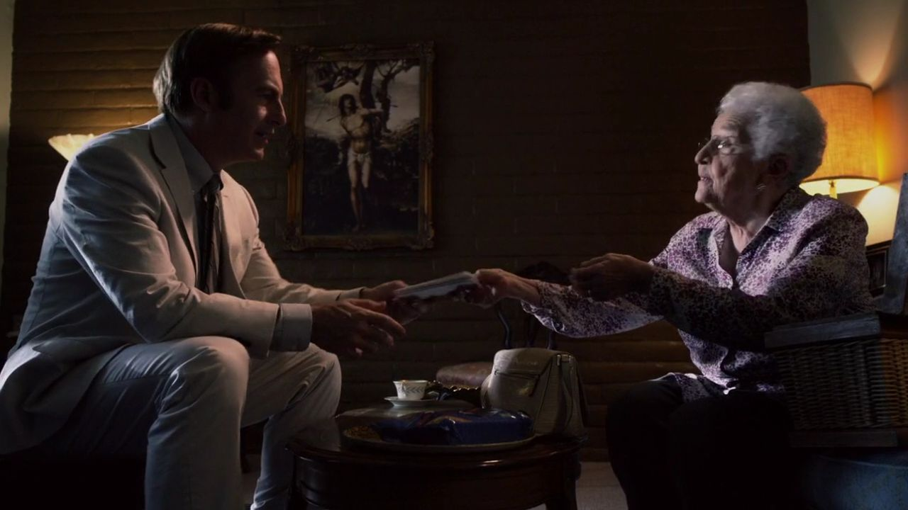
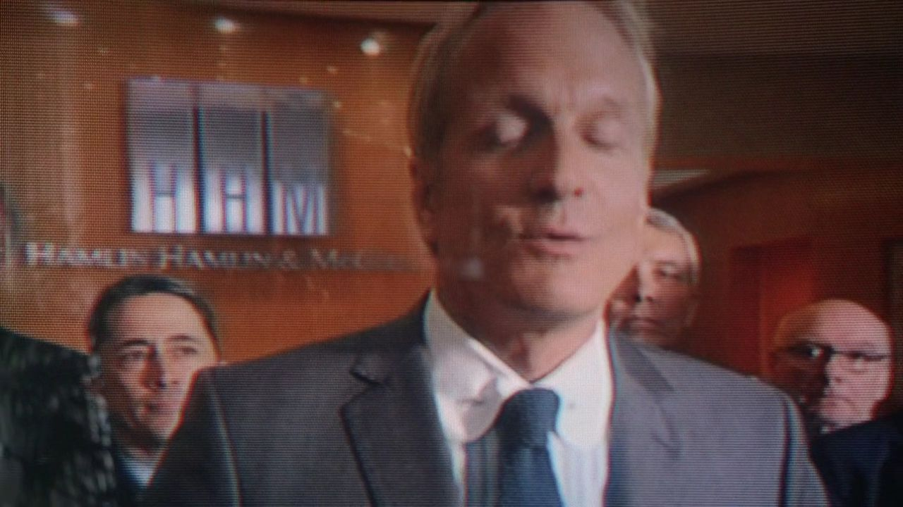
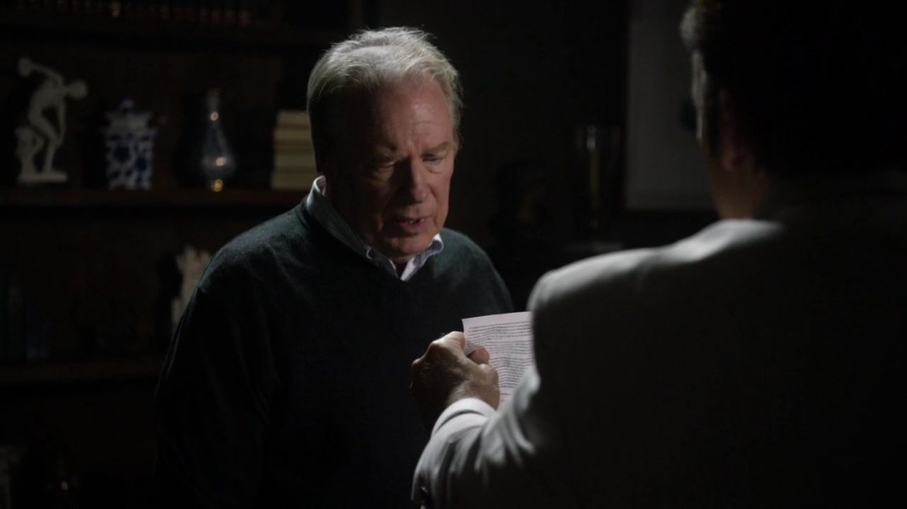
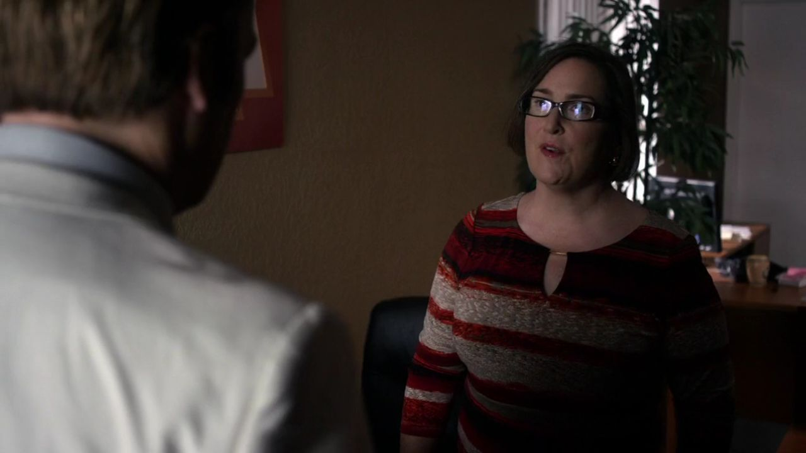
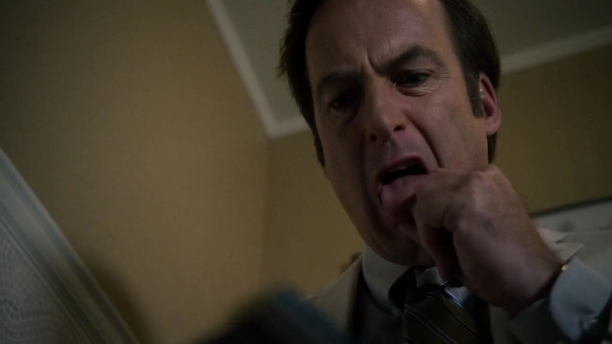
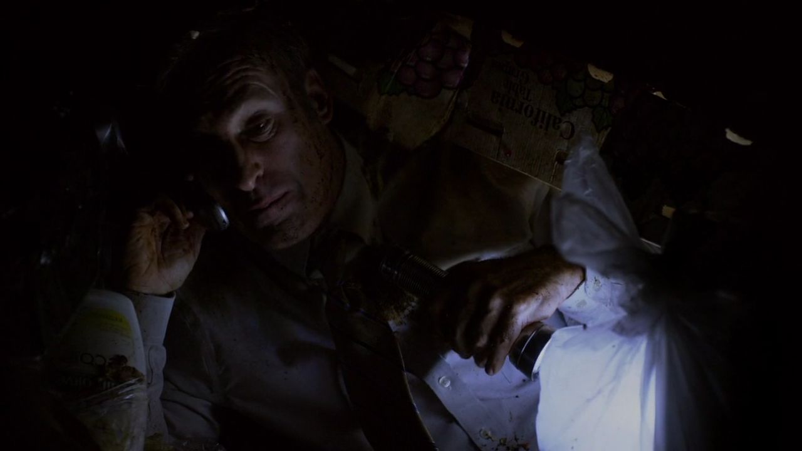
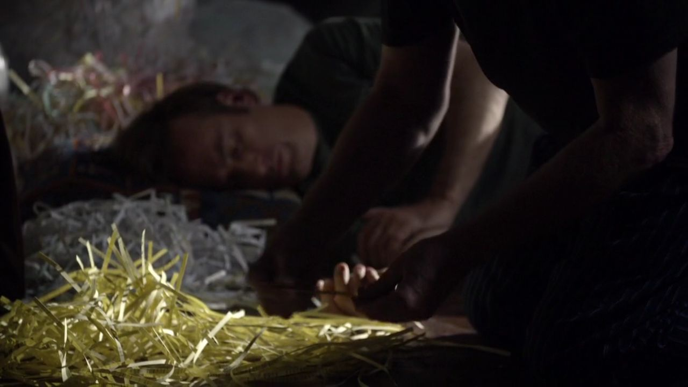
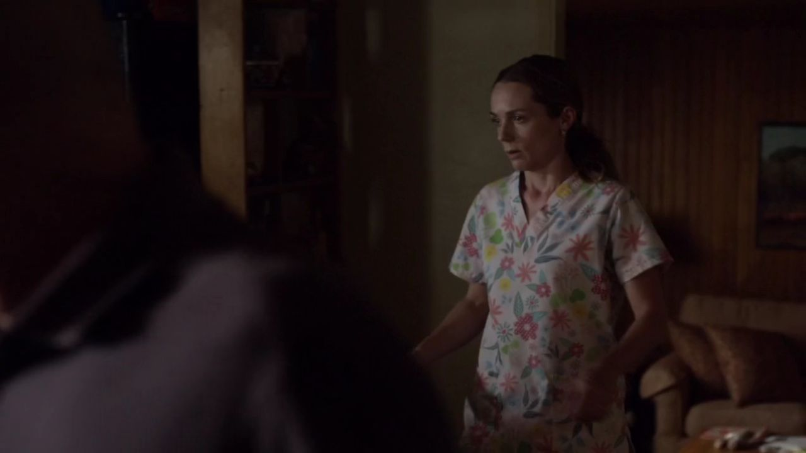
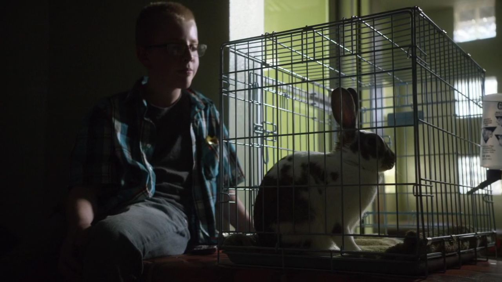
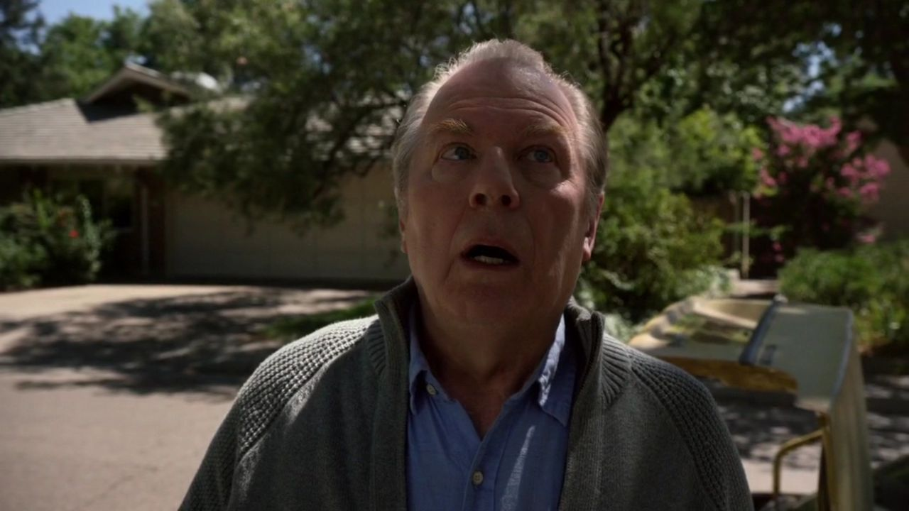

01
沙鹬养老院 / 艾琳的账单
老人以为自己不懂钱，他先问是谁在控制账单。

剧情事实艾琳谈到养老机构统一收取收入、支付费用后给生活零用钱的方式。吉米查看账单，注意到日常用品的收费不合理。 [1][2]
这一场为什么重要 · 个人解读
这里的入口不是天降内幕，而是一个人解释不清自己的钱。吉米没有把它当成老人记性不好就略过，而是追问费用怎样形成。老年法律业务因而显出深一层价值：帮助人在不对称的系统面前，重新看懂自己的生活。
因此 →一次疑问，需要与别人的账单相互核对。

风骚律师 · 第一季第 08 集
一张小账单，一箱碎纸。
他终于找到值得认真做的大案，也找回兄弟并肩的样子。
剧透边界 截至 S01E08，含本集结尾
10 个剧情节点 · 8 位人物 · 04 组冲突给老人拟遗嘱的工作，意外把吉米带到一套收费系统面前。他先听到生活上的困惑，再从账单里看见可以追问的问题。这一集的推进靠的是耐心、实际劳动与专业合作：去问、去找、去拼。查克不再只是评价弟弟的人，而是真正加入了工作。与此同时，开场那次没有成功的求职，仍在这份温暖旁边留下一个未解的问题。
读这一集，跟住三件事从生活细节进入案件 / 碎纸怎样变成证据 / 兄弟怎样一起工作

三幕梳理本集。每一场都区分剧情事实与个人解读，把行动、动机和后果连起来。
大问题，先藏在一件日常小事里。

剧情事实艾琳谈到养老机构统一收取收入、支付费用后给生活零用钱的方式。吉米查看账单，注意到日常用品的收费不合理。 [1][2]
这里的入口不是天降内幕，而是一个人解释不清自己的钱。吉米没有把它当成老人记性不好就略过，而是追问费用怎样形成。老年法律业务因而显出深一层价值：帮助人在不对称的系统面前，重新看懂自己的生活。
因此 →一次疑问，需要与别人的账单相互核对。

剧情事实吉米收集更多住户账单，与查克讨论重复出现的收费问题。两人认为可能存在系统性多收费用，值得进一步调查。 [1][2]
零散的不满开始变成可以比较的材料。查克的价值在于把线索放进法律结构，吉米的价值则在于先获得住户的信任和细节。谁更像真正律师的问题，暂时被怎样把工作做下去取代。
因此 →继续进入机构时，他遇到了第一道实际阻拦。

剧情事实吉米再去见住户时被前台阻止。他注意到机构内正在碎纸，担心与调查相关的资料被销毁。 [1][2]
阻挡改变了他的行动条件，也让时间变得紧迫。没有正式判决先替他确认全部怀疑，他必须在不确定中判断是否继续。读者可以看到风险迹象，却不能把人物的推测直接升级为已经完成的法律认定。
因此 →他需要先让对方收到保存资料的明确要求。
客户的信任让疑点出现，兄弟开始共同判断。
把怀疑变成别人必须回应的材料。

剧情事实吉米借洗手间停留，用手边的纸临时写出停止销毁资料的要求，交给机构工作人员后被带离。 [1][2]
第一集他用办公室门面掩盖窘迫，这里却不再需要先把环境打扮体面。纸不正式，目的很清楚：让已经观察到的风险进入可以追问的记录。专业性开始从外观转向行动是否对问题有用。
因此 →资料可能已进垃圾箱，他决定自己去找。

剧情事实吉米夜间翻找养老院垃圾，找到被碎掉的文件，并在疲惫中联系对方律师，继续说明自己会追究问题。 [1][2]
这是本集对英雄广告最清楚的对照：没有被安排的观众，没有让新闻好看的构图，只有需要找出的纸。嘴上说自己认真工作，与把时间和身体真的花在材料上，在这里合到了一起。
因此 →碎纸找到了，但要先重新变成能读的东西。

剧情事实吉米把碎纸带回。查克与他整理拼接，逐步恢复有用文件，并正式加入案件工作。 [1][2]
共同劳动让兄弟的亲近不再只依赖弟弟提供生活照顾。哥哥也可以接过他做不完的事，帮助他完成自己先发现的案子。这份互补是真的，需要被完整保留；不能因为后面还会有冲突，就否认此刻确实发生的合作。
因此 →能支撑主张的文件，使两人坐到了对方律师面前。

剧情事实斯泰茜问迈克怎样处理丈夫留下的钱。迈克劝她用来为自己和女儿做些好事，她仍为持续的生活开销发愁。 [1][2]
这一段把第六集的坦白带回日常。知道了钱的来路，不会让照顾孩子的现实自动消失。迈克想把罪疚转换成能给予家人的东西，却仍得面对持续的资金需要；生活不按一段独白的结尾停止。
因此 →他稍后回到兽医那里，重新考虑额外工作。
实际劳动与家庭现实，并没有因为希望出现就消失。
真正的案子，让兄弟共同开口。

剧情事实沙鹬律师施韦卡特等人与兄弟会谈，提出较小金额的解决方案。兄弟指出跨州交易等材料可能使案件扩大，查克提出两千万美元的和解要求，对方未接受。 [1][2]
这场戏让专业合作变成能被看见的分工。吉米找来事实，查克把事实的可能后果说得更大。数额不是胜诉结果，而是谈判中的主张；真正改变的位置，是对方不能再把他们当成可以轻易打发的零散投诉。
因此 →案子获得更大的可能，也需要更多后续劳动。

剧情事实考虑家人的开销后，迈克再次拜访卡尔德拉，询问此前提到的额外工作。具体任务留待后面展开。 [1][2]
与吉米通过材料找出合法大案并置，迈克的选择更安静。两个人都希望以本领换取能照顾人的收入，正在进入的道路却不一样。相似的需要并不能保证相同的方法，也不能提前替后面的工作定性。
因此 →另一种职业接触开始，镜头仍回到兄弟的工作。

剧情事实专注准备案件的查克去吉米车里取文件，没有按平时的避电习惯做防护。吉米提醒后，他才意识到自己已站到屋外。 [1][2]
这个动作没有证明他的痛苦是装的，也没有宣告从此康复。它显示注意力和投入能够怎样暂时改变他对环境的体验。对吉米，那一刻也像另一种希望：哥哥回到工作里，似乎两人都可以重新回到原来的生活。
因此 →本集停在发现边界被越过的瞬间，问题没有自动解决。
报价没有成为判决，屋外的一步也没有成为终局。
切换故事阶段，再点击角色，查看本集行动、个人诉求与关系变化。
考试回忆给出曾经的拒绝；当下，吉米从住户的困惑进入收费问题。
关系图只归纳本集已展示的行动与联系，不将后续动机提前写入。 人物照统一登记并跨集复用；阶段说明含个人解读，连线不表示每个人已知道全部信息。
按剧情梳理证据怎样增长；不把角色的法律主张误写成已获得的裁判结果。
不是先找大案，而是先听懂一个人的费用。
回看剧情 ↗02在没有观众的地方，完成实际调查劳动。
回看剧情 ↗03兄弟共同说明案件为何可能更大。
回看剧情 ↗个人解读第一幅画面里，律师不体面地躺在垃圾中；第二幅里，他与哥哥一起面对对方律师。真正使位置改变的，不是换一套衣服，而是让线索经得起阅读，并找到能解释其意义的合作者。
四组冲突深读 · 以下为个人解读，事实边界随卡片标注。
前几集吉米常需要哥哥评价自己是否在正路上，这次他带来的事实先有了说服力。查克的参与不是单纯给弟弟一份安慰，而是一个专业人确实看见有价值的案子。
纸屑需要两个人做完，亲近因此从谁照顾谁，转为谁能接过谁尚未完成的部分。这种合作的温度必须被当真：如果读者只等下一集揭晓冲突，就会错过人物关系里真实存在、也正因真实才会令人失落的东西。
事实边界：截至本集，拒聘背后的全部来由尚未揭示。
英文短句核对非官方对白转录；中文为本页自译，潜台词属于个人解读。
Are you proud of me?你为我骄傲吗？中文自译
通过资格考试之后，他直接向哥哥索取肯定。
证书已经给出资格，他仍希望最在意的人承认这份努力。
本页选用短句共 12 个英文词。配图呈现相应人物与场景，不逐句指认发声瞬间。核对对白来源 ↗
只在截至本集的情节中阅读；以下均为个人解读。


吉米找到了可以认真做的大案。
哥哥也站回了律师的位置。
这份并肩，是否能延伸成真正的职业接纳？
已经知道 · 剧情事实兄弟共同推进沙鹬案，提出两千万美元要求但未达成协议；查克无防护走到屋外。
还不能预先回答案件需要怎样的资源、吉米能否进入他期待的机构，尚未在本集得到回答。
剧透截至第一季第8集，包含本集结尾。不涉及后续集数或《绝命毒师》的具体揭示。 不用后续的结果，替此刻的人物决定动机。